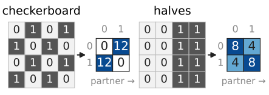
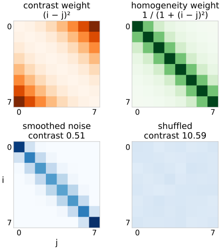
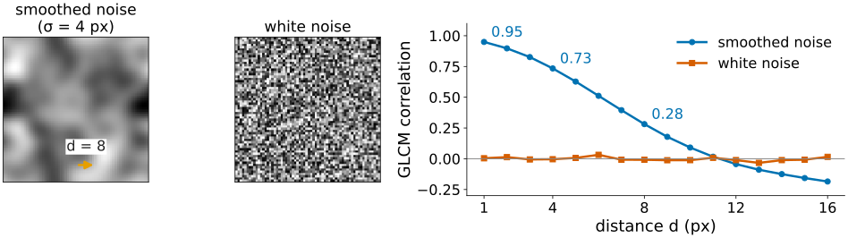
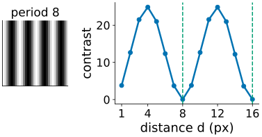
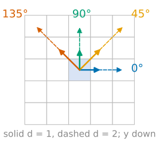
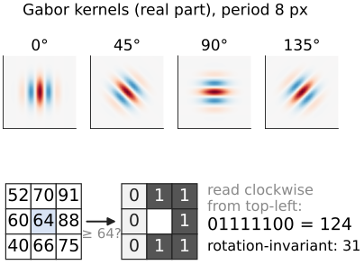

The last unit measured the pixel values of an object as a bag of numbers. Texture is about how the values are arranged: fine or coarse, oriented or not, regular or random.
Histogram features cannot see arrangement: we need pairs of pixels.
The grey-level co-occurrence matrix (GLCM): a 2D histogram of a pixel and its neighbour at a fixed offset.
Left: smoothed noise. Right: the same pixel values, shuffled. Same mean, standard deviation, median, quartiles: every statistic of the last unit is identical.
Left: neighbours are similar. Right: neighbours are unrelated.
Texture needs pairs: compare each pixel with the pixel d steps away.
Demo numbers (8 grey levels, neighbour to the right): contrast 0.51 left, 10.59 right.
The co-occurrence matrix
Quantise the image to L grey levels 0, \dots, L-1.
Choose an offset: distance d and angle (0° = to the right, 90° = up).
For every pixel whose partner at that offset is also inside the image (or object), add 1 to cell (level of the pixel, level of the partner).
Usually symmetric: count each pair both ways. Divide by the total: a joint probability p(i, j).
Two 4 \times 4 images with 8 zeros and 8 ones, offset 1 to the right:
image
pairs (0,0)
(0,1) and (1,0)
(1,1)
checkerboard 0 1 0 1 / 1 0 1 0 / …
0
12 + 12
0
halves 0 0 1 1 (every row)
8
4 + 4
8

Same histogram, different matrices: all mass off the diagonal for the checkerboard, mostly on it for the halves.
The math: the GLCM
For a quantised image q, offset \mathbf d = (d_x, d_y) and region \Omega:
P_{\mathbf d}(i, j) = \#\{\mathbf x : \mathbf x \in \Omega,\ \mathbf x + \mathbf d \in \Omega,\ q(\mathbf x) = i,\ q(\mathbf x + \mathbf d) = j\}.
Symmetric version P_{\mathbf d} + P_{\mathbf d}^\top = P_{\mathbf d} + P_{-\mathbf d}: the offsets \mathbf d and -\mathbf d are merged, so 0° and 180° give the same matrix.
p = P / \sum P is the joint distribution of (q(\mathbf X), q(\mathbf X + \mathbf d)) for a random pixel \mathbf X: the 2D histogram of the image against its own copy shifted by -\mathbf d.
The marginals p_x(i) = \sum_j p(i, j) are (nearly) the grey-level histogram: the histogram is inside the GLCM, the arrangement is in how the mass spreads around the diagonal.
Angles on a pixel grid (Haralick 1973): 0°, 45°, 90°, 135° with offsets (d, 0), (d, -d), (0, -d), (-d, -d), y pointing down.
Features: statistics of the matrix
Each feature summarises where the mass of p(i, j) lies:
Contrast: the mean of (i - j)^2: large when neighbours differ. Checkerboard 1, halves 0.33.
Homogeneity: the mean of 1/(1 + (i - j)^2): large when the mass is near the diagonal. 0.5 and 0.83.
ASM (angular second moment) = \sum p^2, and energy= \sqrt{\text{ASM}}: large when few pairs dominate. 0.5 and 0.28.
Entropy= -\sum p \log_2 p: the expected surprise of a pixel pair, in bits (entropy itself is the compression day’s topic). 1.0 and 1.92.
Correlation: the Pearson correlation of a pixel with its partner. −1 and +0.33.
Haralick listed 14 features; the others (sum and difference averages, variances and entropies, information measures of correlation) are mostly strongly correlated with these five.

The math: Haralick features
With \mu = \sum_{i,j} i\,p(i,j) and \sigma^2 = \sum_{i,j} (i - \mu)^2 p(i,j) (the same for rows and columns of a symmetric p):
\text{ASM} \le 1 with equality iff all pairs fall into one cell (a constant patch); 0 \le \text{entropy} \le \log_2 L^2.
Correlation is undefined for a constant patch (\sigma = 0).
A familiar object, twice
The GLCM is the 2D histogram of an image against its shifted copy. The colocalisation day draws the same picture with two channels instead.
Correlation at offset \mathbf d is the autocorrelation of the image at lag \mathbf d (the Fourier unit): how similar the image is to itself shifted by \mathbf d.
Plotting a feature against d is therefore a cheap look at the scale of the texture: correlation falls off over about the size of the grains.
Demo, smoothed noise (σ = 4 px), 8 levels: correlation 0.95 at d = 1, 0.73 at d = 4, 0.28 at d = 8. White noise: about 0 at every d.

Try it: the co-occurrence matrix
Choices that change the numbers
Distance d: the scale of the texture you look at. Stripes with period 8: contrast 0 at d = 8 and d = 16, maximal at d = 4 and d = 12.
Angle: oriented textures give different matrices per angle. Report each angle, or average the four for rotation invariance.
Number of levels L: 8–256. Too many levels for a small object: the matrix is mostly empty. Disc of radius 6 (200 pairs), L = 64: entropy 6.80 bits, against 9.01 on the whole patch.
Quantisation range: each object’s own min–max, or one fixed range. Per-object min–max makes a dim, low-contrast cell look like a bright one: it destroys comparisons between objects.
Symmetric or not, and which pairs count: only pairs with both pixels inside the object.

The math: angles and rotation
Rotating the image by 90° maps the offset (d, 0) to (0, -d) (or its negative): the four standard angles are permuted. The average over the four angles is therefore invariant to rotations by multiples of 90° (and nearly to 45°).
For an angle \theta that is not a multiple of 45°, the offset (d\cos\theta, -d\sin\theta) is not on the grid. Rounding it changes both the direction and the length; interpolating the partner pixel blurs the values. Either way, only four (or eight) directions are exact.
With L levels and N pairs, at most \min(L^2, N) cells are non-zero, so \text{entropy} \le \log_2 \min(L^2, N): on a small object the entropy measures N, not the texture.

Naming traps
The same name, different formulas, depending on the program:
name
formulas in use
homogeneity / inverse difference moment
\sum p/(1 + (i-j)^2)
inverse difference
\sum p/(1 + \lvert i-j \rvert), sometimes also called homogeneity
energy
\sqrt{\text{ASM}}, or ASM itself
entropy
\log_2 (bits) or \ln (nats)
sum variance
with the sum average or (a misprint in the original paper) the sum entropy
Grey levels numbered from 0 or from 1 change the sum average. Always state the formula, d, angle, L and the range together with the numbers.
Other texture descriptors
Gabor filter bank: convolve with a Gaussian window times a wave (the Fourier unit: a band-pass filter tuned to one frequency and orientation). The mean energy of each filter’s output is one feature; a bank of 4 orientations × 4 frequencies gives 16.
Local binary patterns (LBP): compare each pixel’s 8 neighbours with it (1 if brighter or equal) and read the 8 bits as a code 0–255. The histogram of codes over the object is the feature vector. Taking the smallest of the 8 rotations of each code makes it rotation invariant; “uniform” codes (at most two 0/1 changes around the circle) are edges, corners and flat spots.
Granularity: how much of the signal disappears in openings of growing size (the granulometry of the morphology day).
Learned features: the activations of a trained network act as texture descriptors (the neural network days).

The math: Gabor and LBP
Gabor kernel with frequency f, orientation \theta, width \sigma: g(x, y) = e^{-(x^2 + y^2)/2\sigma^2}\, e^{2\pi i f (x\cos\theta + y\sin\theta)}. Its Fourier transform is a Gaussian centred at f(\cos\theta, \sin\theta): it passes one patch of the spectrum. Feature: \frac{1}{|\Omega|}\sum_\Omega |I * g|^2.
LBP at pixel c with neighbours n_0, \dots, n_7 clockwise from the top-left: \mathrm{LBP} = \sum_{k=0}^{7} s(n_k - c)\, 2^{7-k}, \qquad s(t) = [t \ge 0]. Invariant to any increasing grey-level map (offset, gain, gamma): only the order of values matters. Rotation-invariant code: \min_r \mathrm{rot}_r(\mathrm{LBP}) over the 8 circular shifts.
Catalogue: texture columns
column
measures
unit
range
contrast
mean squared level difference of pairs
levels²
0 \dots (L-1)^2
homogeneity
closeness of pairs to the diagonal
–
0 \dots 1
ASM, energy
uniformity of the pairs
–
0 \dots 1
entropy
randomness of the pairs
bits
0 \dots \log_2 L^2
correlation
linear dependence of a pixel and its partner
–
-1 \dots 1
Gabor energy
power in one frequency band and orientation
intensity²
\ge 0
LBP histogram
frequency of each local pattern
–
sums to 1
granularity
signal removed per opening size
–
0 \dots 1
Every texture column comes with its settings: d, angle (or average), L, quantisation range.
Summary
Texture is the arrangement of values; the histogram cannot see it.
The co-occurrence matrix counts pairs (level at \mathbf x, level at \mathbf x + \mathbf d): a 2D histogram of the image against its shifted copy.
Contrast and homogeneity say how far pairs are from the diagonal, ASM/entropy how concentrated they are, correlation how linearly related.
The numbers depend on d (scale), the angle, the number of levels and the range: fix them, report them, and do not rescale each object to its own min–max.
Gabor energies, LBP histograms and granularity are other texture columns.